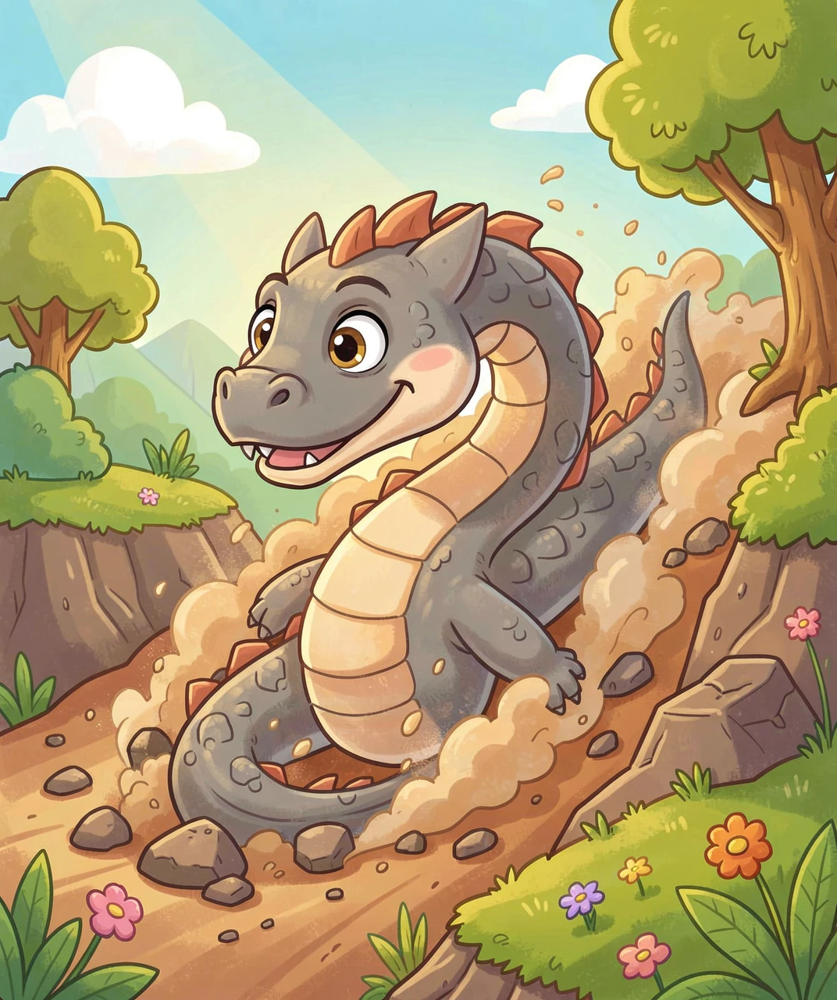
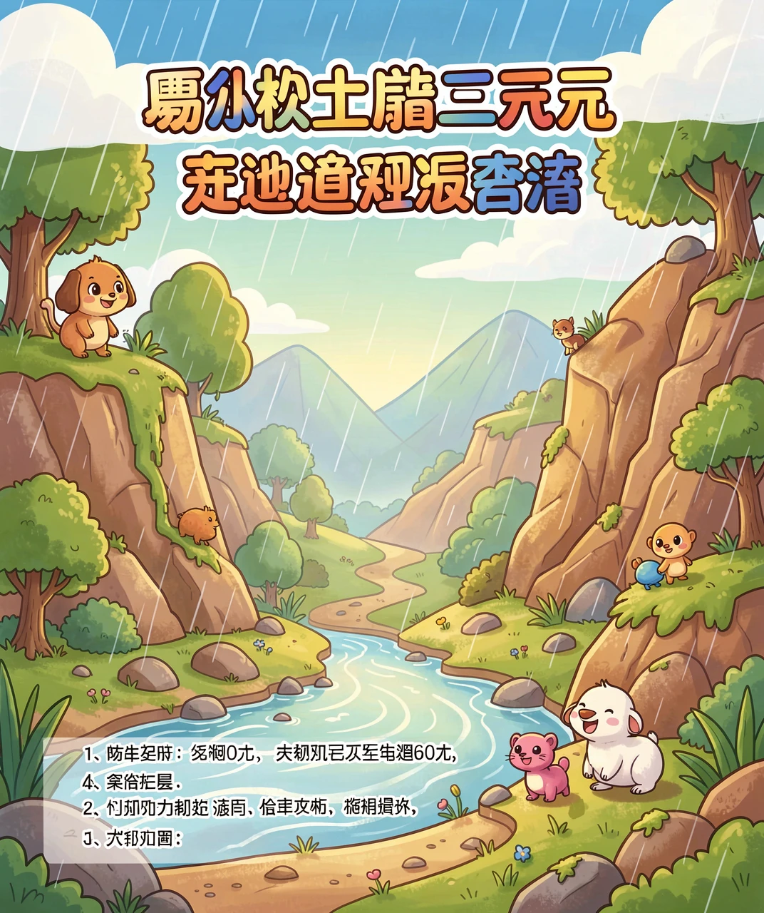
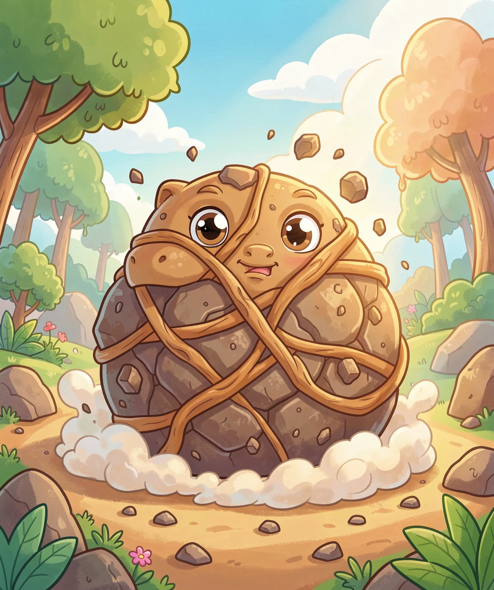
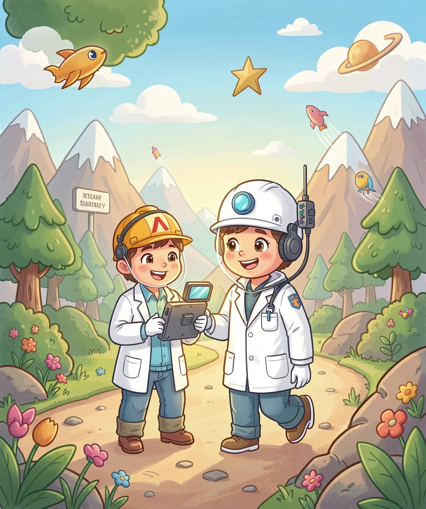
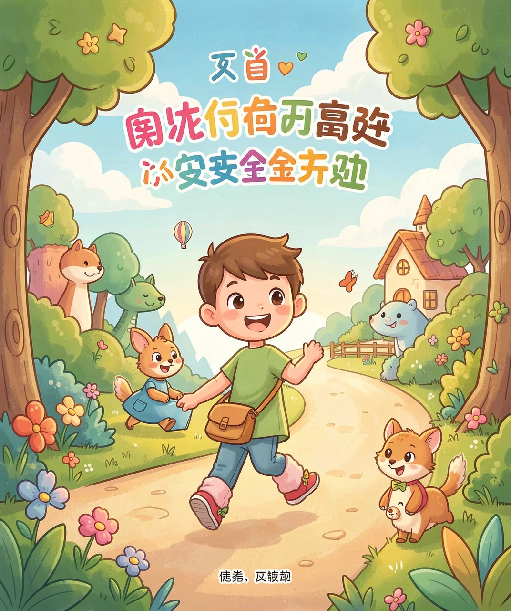

当大山开始「流动」
你见过山吗？山又高又稳，几百年都一动不动，好像永远待在那里。可是，有一种可怕的力量，能让大山的一部分「奔跑」起来——它像一条灰色的巨龙，从山坡上轰隆隆地冲下来，卷走石头、树木，甚至整栋房子。
这种力量，就是泥石流。它的名字很直白：一半是「泥」，一半是「石」，再加上「流」——它是一股由泥浆和石头混在一起、会流动的洪流。
泥石流不是普通的洪水。普通洪水只是水，比较「轻」；泥石流里装满了泥沙和石头，又重又黏，跑起来像一锅滚烫的「石头粥」。它可以在一瞬间，把山谷里的一切都吞没。今天，我们就来揭开这条「灰色巨龙」的秘密。

要造出一场泥石流，需要三位「主角」同时登场，缺一个都不行。
第一位主角是松软的泥土和石头。山坡上如果堆满了松散的泥沙、碎石，就像一堆没固定好的积木，随时可能塌下来。
第二位主角是大量的水。暴雨哗啦啦地下，或者山上的冰雪突然融化，水渗进泥土里，把土泡软、泡透。水就像「润滑剂」，让原本老老实实待在山上的土石，变得又湿又滑。
第三位主角是陡峭的坡。山坡越陡，土石越容易往下滑。就像滑滑梯，坡越陡，滑得越快。
当这三样凑齐了——松软的土石 + 大量的水 + 陡峭的山坡——土石就会被水「唤醒」，变成一锅流动的泥浆，借着坡势轰隆隆地冲下去。这就是泥石流的诞生。

泥石流有个让人害怕的本领：它跑得特别快，破坏力也特别大。这是为什么呢？
先说「快」。泥石流里裹着石头，石头在泥浆里翻滚、碰撞，反而让泥浆流动得更顺畅——这有点像你搅动一碗浓汤，越搅它越「活」。而且泥石流「体重」很大，往下冲的时候，重力拼命拽着它，速度就越冲越快。它的速度，快的能达到每秒十几米，比人跑步快得多，甚至能追上一辆小汽车！
再说「猛」。你想想，一块普通的小石头砸过来已经很疼了。泥石流里装的是成千上万块大石头，有的比人还大，被泥浆裹着一起冲下来，就像一列装满石头的火车。所以它能把大树连根拔起、把桥梁冲垮、把房子掩埋，破坏力惊人。
而且它还有个「龙头」——泥石流的最前面，常常拱起一道高高的「石墙」，像龙头一样，撞向什么就摧毁什么，所以特别危险。

泥石流不是到处都会发生的。它特别喜欢在几个地方「出没」。
首先是山区，尤其是又高又陡的大山。我国西南部（比如四川、云南、贵州）山地多、坡陡，是泥石流最常出现的地方。
其次是地震过后的地方。地震会把山体震松，山上落下大量松散的碎石，这些碎石就像「火药」，一旦遇上暴雨，就容易被冲成泥石流。
还有树木被砍光的山坡。树的根就像一张大网，把泥土紧紧抓住。如果没有了树，泥土就「没人管」了，一下雨就容易被水冲走，变成泥石流。所以种树、保护森林，是防止泥石流的好办法。
聪明的科学家会提前在这些地方装上「监测器」，像给大山量体温一样，随时观察雨量和山体的动静，一有危险就拉响警报，提醒大家赶紧撤离。

泥石流虽然可怕，但只要我们懂得正确的躲避方法，就能保护好自己。
最重要的一条：往高处跑，往两边跑，千万不要顺着沟往下跑！泥石流是沿着山谷往下冲的，你如果顺着它跑，永远跑不过它。正确的做法是，立刻朝泥石流两侧的高处、或者垂直的方向跑，爬到坚固的高坡上。
还要记住：不要躲在沟谷里，也不要躲在大树、石头旁边，因为泥石流会把它们一起冲走。要跑到开阔、坚硬的高地上。
最后，如果你住在山区，下雨天一定要多留意天气预报，听到预警警报就要听大人和救援人员的话，早早撤离到安全的地方。生命最宝贵，安全第一！

（答案：D、A、B、B、C。你都答对了吗？）